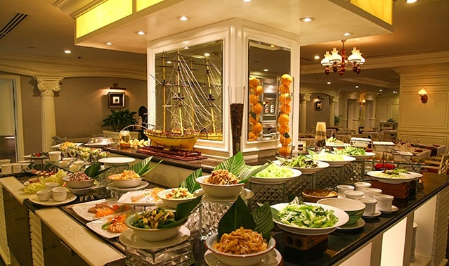
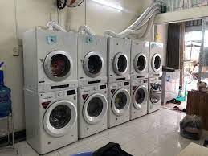
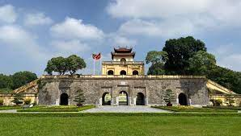
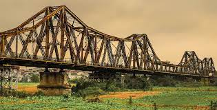
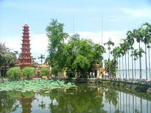
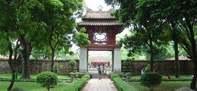
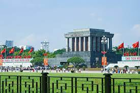

Dịch vụ ăn uống tại phòng liên tục phục vụ Quý khách suốt 24 tiếng hằng ngày.
Khách sạn chúng tôi cung cấp tận tình và chu đáo các dịch vụ ăn lúc sáng sớm,
ăn khuya, bữa ăn riêng dành cho hai khách, hoặc các bữa tiệc gặp gỡ ngay tại
chính căn phòng của quý khách.
Thực đơn phong phú với vô vàn sự lựa chọn đa dạng về các món ăn ngon và có lợi
cho sức khỏe. Khách sạn chúng tôi còn cung cấp thực đơn đặc biệt dành cho khách
trẻ em với nhiều món ăn ngon và hấp dẫn.

Khách sạn, khu nghỉ dưỡng cung cấp dịch vụ giặt ủi phục vụ trong cùng một ngày
(đồ giặt ủi được nhận vào buổi sáng và được trả lại cho khách hàng vào buổi tối)
hoặc qua đêm (đồ giặt ủi được nhận vào buổi tối và được trả lại cho khách hàng
vào sáng hôm sau) kể cả sử dụng các thiết bị giặt là của khách sạn hoặc hợp đồng
thuê dịch vụ giặt ủi bên ngoài.
Tất cả đồ giặt của khách hàng sẽ được chuyển trả đến phòng của khách hàng không
muộn hơn 8 giờ tối

Bất kể quý khách dự định tổ chức hội nghị khách hàng hay chỉ đơn giản là một buổi họp bàn thân mật, InterContinental Nha Trang hiểu rõ và luôn mong muốn góp phần mang đến thành công và những trải nghiệm khó quên. Với năm phòng hội nghị rộng rãi ngập tràn ánh sáng trời với thiết kế cách tân, cùng sảnh tiệc grand ballroom không cột lớn nhất trong thành phố có sức chứa lên đến 800 khách, đây chắc chắn là địa điểm lý tưởng cho mọi sự kiện và hội nghị. Hướng đến việc hỗ trợ một cách thiết thực cho nhà tổ chức hội nghị, hệ thống trang thiết bị hiện đại của chúng tôi sẽ hứa hẹn mang đến thành công cho các loại sự kiện từ hội nghị, hội họp kinh doanh cho đến các buổi tiệc tri ân khách hàng.

Hoàng thành Thăng Long là di sản văn hóa thế giới nằm giữa lòng Hà Nội và đã có bề dày
lịch sử hơn 1300 năm. Nơi đây chứa đựng những di tích, di vật độc đáo, minh chứng cho lịch
sử của Thăng Long - Hà Nội và lịch sử dân tộc Việt Nam trải qua nhiều thời đại. Địa chỉ:
19C Hoàng Diệu, Điện Bàn, Ba Đình.


Không chỉ đơn thuần bắc qua hai bờ sông Hồng, cầu Long Biên còn chính là dấu ấn nối liền
giữa hiện tại và ký ức xưa của những người dân yêu Hà Nội. Cầu Long Biên được xây dựng vào năm
1898, dân gian còn gọi bằng cái tên cầu Sông Cái hay cầu Bồ Đề vì cầu bắc qua bến Bồ Đề, Gia Lâm,
Hà Nội. Với chiều dài 1.682 m cùng phần cầu dẫn dài 896 m, cầu Long Biên được chia làm 9 khung,
mỗi khung dài 61 m. Theo thiết kế ban đầu, cầu có tất cả 19 nhịp dầm thép đặt trên 20 trụ cao hơn
40 m.

Nằm trên hòn đảo phía đông Hồ Tây, chùa Trấn Quốc từng vào top những ngôi chùa đẹp nhất thế
giới. Chùa có lịch sử 1.500 năm, là trung tâm Phật giáo của kinh thành Thăng Long vào thời Lý và
Trần. Công trình được công nhận là Di tích lịch sử văn hóa cấp quốc gia năm 1962. Năm 2003, chùa
tổ chức khánh thành Bảo tháp Lục độ đài sen cao 15 m, 11 tầng.

Đây là trường đại học đầu tiên của Việt Nam. Ngày nay du khách đến có thể tham quan các bia
đá, khuôn viên trang nghiêm với những ao sen, ao súng. Văn Miếu là nơi thanh bình, yên tĩnh hiếm
hoi giữa thành phố sôi động. Du khách sẽ cảm nhận được sự hài hòa giữa cổ và kim khi tới đây qua
những bức tường nghìn năm tuổi.
Khuê Văn Các (nghĩa là "gác vẻ đẹp của sao Khuê") là công trình biểu tượng của Hà Nội.
Văn Miếu được xây dựng năm 1070 dưới thời vua Lý Thánh Tông. Đến năm 1076, vua Lý Nhân Tông mới cho
lập nhà Quốc Tử Giám.
Nơi này cũng lưu giữ nhiều hiện vật, tư liệu quý, đặc biệt là 82 bia tiến sĩ đã được UNESCO công nhận
là "Di sản tư liệu thế giới".

Đối với người Việt, đây là một trong những điểm tham quan quan trọng nhất trong nước. Du khách
tới để bày tỏ lòng thành kính với Chủ tịch Hồ Chí Minh. Khách tham quan cần giữ im lặng, mặc quần áo
phù hợp và không chụp ảnh tại những khu vực cấm.
Dự lễ thượng cờ vào buổi sáng là trải nghiệm đặc biệt tại lăng Chủ tịch Hồ Chí Minh. Nếu bỏ lỡ, du
khách có thể yên tâm dạo chơi một vòng quanh thành phố và quay lại đây tham gia lễ hạ cờ lúc 9h tối hàng
ngày. Không khí trang nghiêm bao trùm khắp quảng trường Ba Đình khi tiếng loa phát thanh vang lên báo lễ
hạ cờ sắp diễn ra. Người người xếp hàng ngay ngắn, dõi theo đoàn cảnh vệ trang trọng hạ lá cờ Tổ Quốc
trong tiếng nhạc bài hát "Bác vẫn cùng chúng cháu hành quân".
Nằm trên hòn đảo phía đông Hồ Tây, chùa Trấn Quốc từng vào top những ngôi chùa đẹp nhất thế
giới. Chùa có lịch sử 1.500 năm, là trung tâm Phật giáo của kinh thành Thăng Long vào thời Lý và
Trần. Công trình được công nhận là Di tích lịch sử văn hóa cấp quốc gia năm 1962. Năm 2003, chùa
tổ chức khánh thành Bảo tháp Lục độ đài sen cao 15 m, 11 tầng.
Hãy đến với dịch vụ TOUR DU LỊCH KHÁCH ABC đội ngũ nhân viên chu đáo nhiệt tình với những
tour du lịch trọn gói

THUÊ XE MÁY TỰ LÁI
Thấu hiểu nhu cầu thuê xe máy tự tham quan du lịch Đà Lạt của du khách, hiện nay khách sạn ABC đang kết hợp
cùng một số đối tác cho thuê các loại xe máy đời mới như Yamaha Sirius, Yamaha Nouvo, Honda Wave, Honda Air
Blade... với giá cả hợp lý, chỉ từ 100.000 đồng/ngày.
Lưu ý khi tự lái xe máy ở Hà Nội:

- Các điểm giao nhau (ngã ba, ngã tư) tại Đà Lạt không có trụ đèn giao thông. Khi đến các điểm giao nhau,
dù đi thẳng hay chuyển hướng, bạn cũng nên chú ý biển báo giao thông, đặc biệt là biển đường cấm, đường một chiều.
- Đà Lạt là một thành phố có nhiều vòng xuyến (bùng binh). Khi vào hay ra vòng xuyến, chú ý phải nhường đường
cho xe đi bên trái.
- Dừng - đỗ xe bên trong vạch trắng của lề đường. Nhớ khóa hay gởi xe. Bảo quản xe và nón bảo hiểm cẩn thận.
THUÊ XE 4-7 CHỖ CÓ TÀI XẾ HOẶC TỰ LÁI
Các đối tác cùa khách sạn ABC hiện đang cung cấp nhiều mẫu xe 4 - 7 chỗ Mazda, KIA, Toyota, đều là xe đời mới 2018 -
2019. Nhờ vậy, quý khách sẽ thoải mái lựa chọn dòng xe mình yêu thích với giá thuê hợp lý.
Xin vui lòng liên hệ Lễ Tân hoặc gọi hotline 09123456789 để được hướng dẫn.

Bạn không thích bị gò bó theo một lịch trình cố định khi du lịch theo tour? Bạn cũng không muốn phải mất nhiều thời gian
khi tìm kiếm, tra cứu từng sản phẩm riêng lẻ cho chuyến du lịch của mình? Combo du lịch chính là giải pháp tuyệt vời dành
cho bạn. Hãy cùng điểm qua một số thông tin về combo du lịch hấp dẫn tại khách sạn ABC :
Dịch vụ trọn gói bao gồm dịch vụ lưu trú và ăn uống đi kèm, bên cạnh đó có thể gồm một số hoạt động phụ như dịch vụ spa,
đưa tiễn sân bay,… giúp du khách có thể tự do lựa chọn loại hình phù hợp với thời gian, túi tiền, và sự thoải mái của họ.